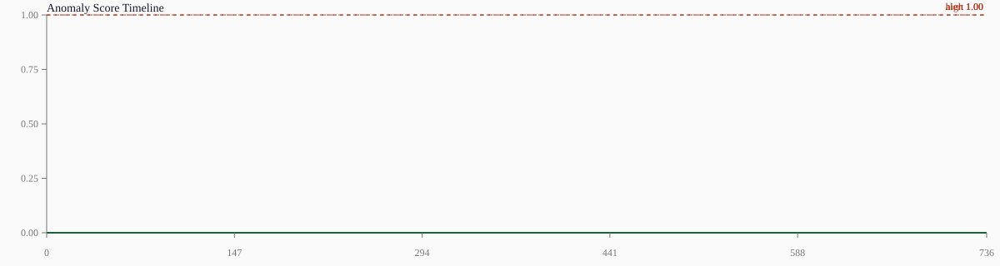

当前片段未发现需要预警的异常行为。
Click any event row to jump to its start time.

Clip export mode: fragment_only. If direct mp4 slices are unavailable, use the jump links to open the source video at the alert segment.
Threshold 1.000, high-risk threshold 1.000, score mean 0.000.
ROC AUC: nan | PR AUC: 0.5
Positive mean: nan | Negative mean: 0.0
| Event | Campus Label | Risk | Range | Peak | Mean | Reason | Clip |
|---|---|---|---|---|---|---|---|
| No alert segment was generated for this video. | |||||||